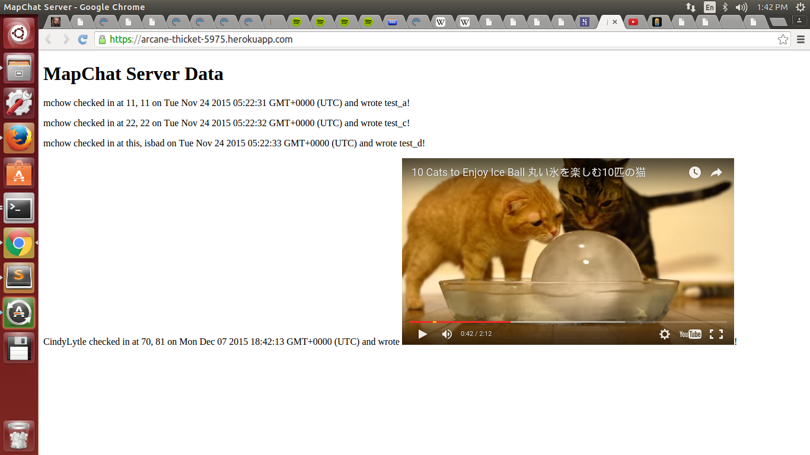

Introduction
This document assesses the security of the MapChat server and web application developed by Dan Baigel for Comp 20 assignments 2 and 3.
MapChat is a web application which maintains locations and messages submitted by its users. The server possesses several functions: a POST /sendLocation API (which allows data input and retrieval), a GET /latest.json API (which allows for retrieval of the latest submission for a given user), and a web interface that displays the list of locations and messages submitted by all logins. The web application inputs data for a given user based on the client's location and displays all of the users in the database on a map.
I was assigned to identify security vulnerabilities in the application and suggest solutions for them. This analysis will not address one glaring flaw in MapChat's design—the username system. It is simple to submit false data for a given user once an approved login is identified (this is simple—just take one look at the server's web interface or at the web application).
Methodology
Initially, I performed black-box testing using curl. Once I completed my attacks, I reviewed the code in an attempt to identify other security or privacy risks.
Abstract of Findings
MapChat puts too much trust in its users. Anyone in the world can submit data to MapChat as long as they know one of the logins, and MapChat does not screen this data before it stores or uses it. Therefore, anyone in the world can submit malicious code to deface MapChat or defraud users. Third-party websites that rely on MapChat data are also vulnerable to this sort of malicious input unless they take steps to sanitize the data before using it.
Issues Found
- Cross-Site Scripting
- Affects POST /sendLocation API
- High: This problem makes MapChat's data a security risk to client applications. However, the problem can be easily avoided on the client side by sanitizing the data prior to working with it. Problem entries can also be removed or updated by the database administrator.
- Data submitted via the POST /sendLocation API is not sanitized and can include Javascript or HTML in place of the submitted message. The Javascript or HTML will execute if the client-end code doesn't sanitize the data.
- For example, running
curl --data "login=CindyLytle&lat=70&lng=81&message=<script>window.location='https://youtu.be/ekK7peRxKGc';</script>" https://arcane-thicket-5975.herokuapp.com/sendLocation/will redirect the server index to an adorable cat video: - Similarly, running
curl --data "login=CindyLytle&lat=70&lng=81&message=<iframe width='560' height='315' src='https://www.youtube.com/embed/ekK7peRxKGc' frameborder='0' allowfullscreen></iframe>" https://arcane-thicket-5975.herokuapp.com/sendLocation/will embed a YouTube video directly in the index page: - This issue can be resolved by sanitizing user input before it is saved to the database. You could use a third-party library like XSS Filters. Alternatively, a regular expression could be used to remove dangerous characters (such as the brackets in
<script>) as follows:var string = "<script>"; string.replace(/[^a-zA-Z0-9 ]/g, "");. Sanitization could also be performed on data already in the database by runningdb.collection.update().
- More Cross-Site Scripting
- Affects client-side MapChat application
- High: This problem makes MapChat a security risk to users of the client-side application. Malicious code could be injected to ruin the user experience or even steal user information. However, the problem can be easily avoided on the client side by sanitizing the data prior to working with it.
- Messages can include executable Javascript or HTML. While testing cross-site scripting on the server side, I had run
curl --data "login=CindyLytle&lat=70&lng=81&message=<iframe width='560' height='315' src='https://www.youtube.com/embed/ekK7peRxKGc' frameborder='0' allowfullscreen></iframe>" https://arcane-thicket-5975.herokuapp.com/sendLocation/. Since it was the most recent submission by user CindyLytle, the data was displayed in the MapChat application, including the embedded YouTube video: - This issue can be resolved by sanitizing messages before they are displayed. You could use a third-party library like XSS Filters. Alternatively, a regular expression could be used to remove dangerous characters (such as the brackets in
<script>) as follows:var string = "<script>"; string.replace(/[^a-zA-Z0-9 ]/g, "");
- Access-Control-Allow-Origin Wildcard
- Affects POST /sendLocation API
- High: MapChat stores user-submitted data. Anyone in the world can remotely inject malicious code.
- Upon review of Dan's code, I found that he had set the following response header:
res.header("Access-Control-Allow-Origin", "*"); - The Access-Control-Allow-Origin wildcard, *, allows for sharing with any and all origins. Therefore, any site can send a request and access MapChat's response. Given that MapChat stores user-submitted data, injection of malicious code (such as cross-site-scripting, as we've shown above) is a risk that can affect multiple components of the system.
- This issue could be resolved by implementing a whitelist of acceptable origins.
Conclusion
MapChat's security vulnerabilities make it unsuitable for public use. It is simple to break both the application itself and those of any clients relying on its data. Following the above recommendations will quickly reduce the application's vulnerability to these attacks.
However, MapChat's structural vulnerability—its username system—will remain. This vulnerability allows anyone to submit data for any user once the user's login has been identified. Since logins are publicly available on the server's web interface, it's trivial to falsify user data.
The best course of action would be to fix the listed vulnerabilities, redesign the login system to employ more secure authentication, and conduct a second, more thorough security analysis.